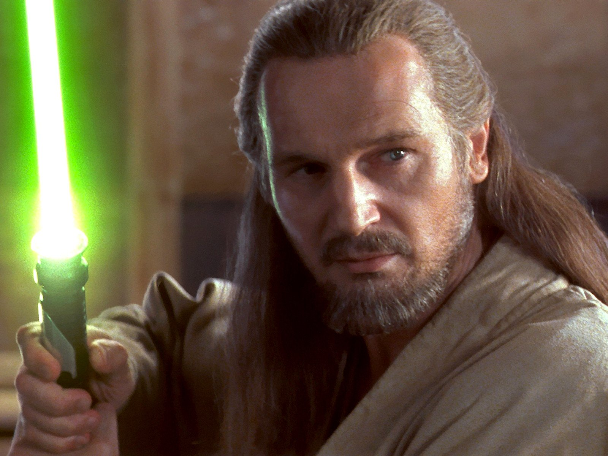

Live in the moment
Stay aware of what is happening around you. The present holds lessons that fear of the future can make us miss.

JEDI GREAT MASTER · STUDENT OF THE LIVING FORCE
A tribute to Qui-Gon Jinn. A Jedi who trusted his instincts, saw possibility in others, and let the Force lead the way.
Discover his storyTHE JEDI WHO LISTENED
Qui-Gon Jinn was a Jedi Master with an independent spirit. A mentor to Obi-Wan Kenobi, he believed that understanding the Force began with paying attention to life itself.
His journey took him from the halls of the Jedi Temple to the deserts of Tatooine, where he saw extraordinary potential in a young Anakin Skywalker. He followed that conviction even when the Jedi Council questioned his judgment.
Be present. Trust the Force. Help those who need you.
His wisdom lived in the way he moved through the galaxy: curious, compassionate, and open to the unexpected.
Stay aware of what is happening around you. The present holds lessons that fear of the future can make us miss.
Respect tradition, but keep asking questions. Qui-Gon followed his conscience, even when it led him beyond the Council's expectations.
Look beyond appearances and circumstances. An unlikely friendship or a small act of kindness can change the course of a life.
MORE THAN A MASTER
His story did not end on Naboo. It continued in the people he taught, the choices he inspired, and his connection to the Force.
THE MENTOR
Through patience and example, Qui-Gon helped shape the Jedi who would carry his teachings forward.
THE BELIEVER
On Tatooine, he recognized a boy's remarkable connection to the Force and fought for his chance to become a Jedi.
THE SEEKER
His exploration of the Force opened a path to preserving consciousness after death, sharing that knowledge with Yoda.
Trust the Force.
Follow your own path.